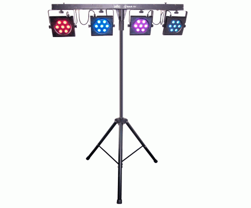
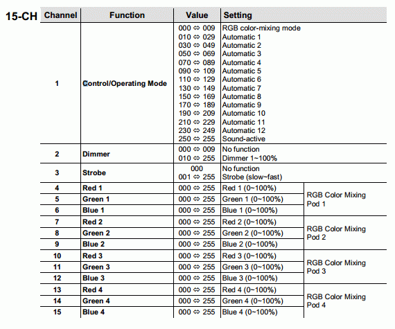
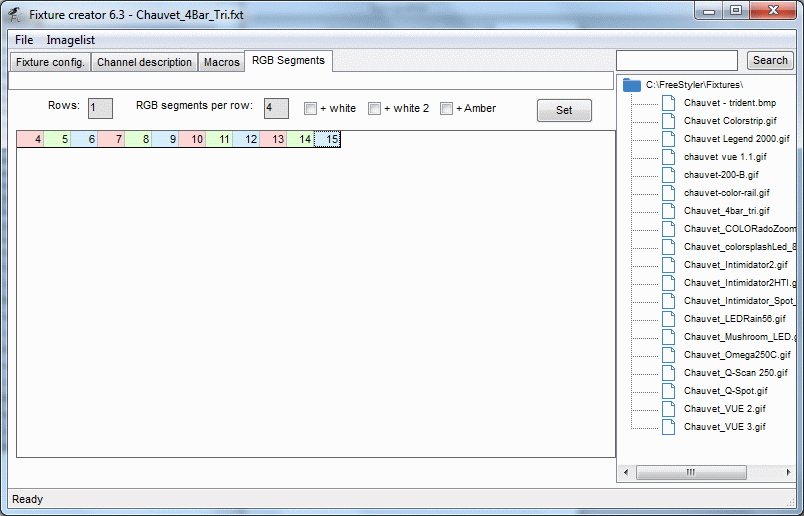
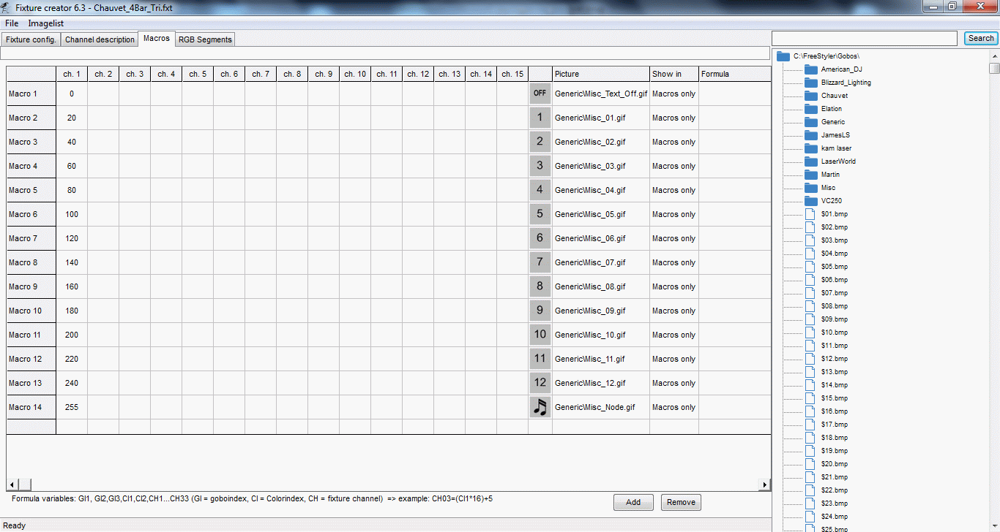
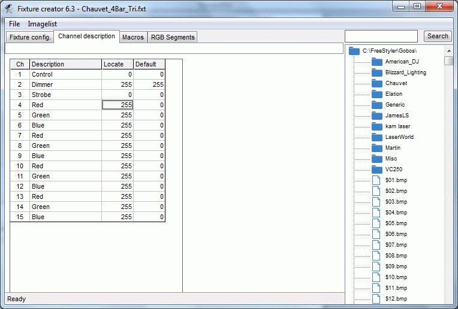
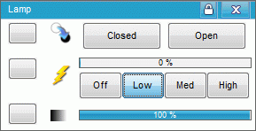
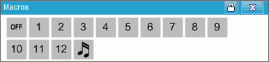
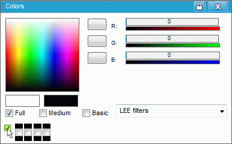

Fixture Creator – LED / Segment Tutorial.
Some fixtures are split in more segments and this means that the controls are repeated more times.
To create a control for such fixture there are more possibilities.
If the control which are repeated more times, are like strobe, dimmer, gobo or movements then the solution are normally to create a combined fixture where each segment are a basic fixture that are repeated more times.Fixture Creator - Combined Fixtures.
This could be a center effect like Fixture Creator Tutorial - Center effect which is realized as 3 single scanners that are added next to each other.
However many fixtures are like a bar where only the light control, RGB, is copied more times.
When it is only RGB control that is repeated then FreeStyler has a “RGB Segment” control which makes it possible to keep all control in one fixture instead of having more fixtures added next to each other.
This can be a LED row like the Blizzard pixelstorm.

Or a PAR bar like the “Chauvet” 4 Bar Tri which is one fixture control for 4 PAR cans / panels which is used in this tutorial.

Before creating the fixture find a picture, crop and scale it so the images are in a reasonable size.
See: Fixture Creator - Pictures and Icons
The control DMX table looks like this.

Open Fixture creator in custom mode.
Enter Manufacturer name “Chauvet”
Fixture name “4Bar Tri”
And add the fixture image.
And fill in the text info.
Then add the total channels, here 15.
Next step are to set the Dimmer and Strobe channels and the related range values.
Then check-on “Enable CMY/RGB”, “RGB Values” and “RGB Segments”.
The setup of RGB Segments is the essential of this tutorial.

Then shift to the “RGB Segments” tab.
The fixture has one row with 4 panels on.
Enter these values and press “Set”
A row with 12 fields will now appear.
Enter the color control canals which correspond to the fields.
Fixture Creator - Color configuration

In the DMX table it can be seen that channel 1 has a control with fixed values which are best realized as macros.
Enter the middle values “Fixture Creator - Tutorial Middle value” and select some icons which fits the function in the “Macros” tab.

Remember to fill in the channel info in the channel tab and eventually change the locate values so it is possible to spot the fixture when the locate function are used.
Also have a look on the default values. Here Dimmer channel is set to full on, 255. This gives that light master is at max and the user only have to adjust the color channel to get some light on.

And finally save the fixture. Have a look on the name convention Fixture Creator - File Name Convention.
In FreeStyler the fixture will look like this.
Lamp panel

Macro panel

And finally the color panel which is the most interesting part in this tutorial.

The 4 small check boxes in lower left corner are used to select which of the 4 panels that will be addressed by the color panel. Panel Description - Color Panel
{kind=link}
{kind=link}
{kind=link}
{kind=link}
{kind=link}
{kind=link}
{kind=link}
{kind=link}